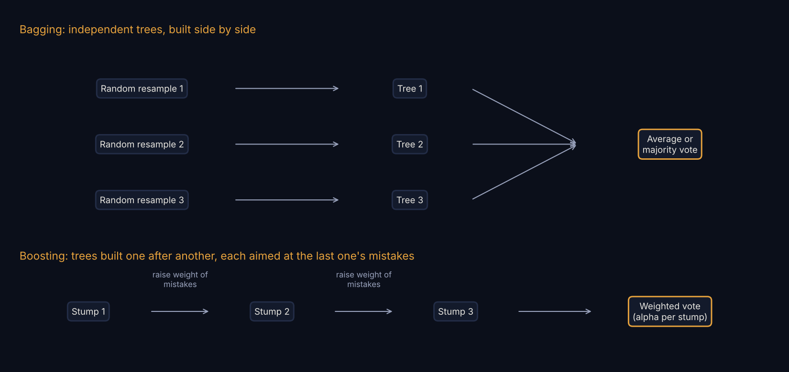
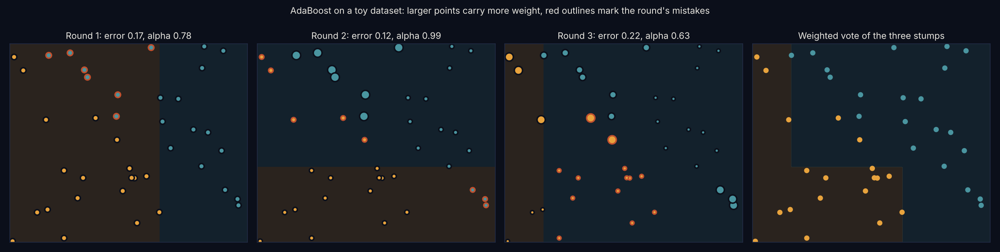
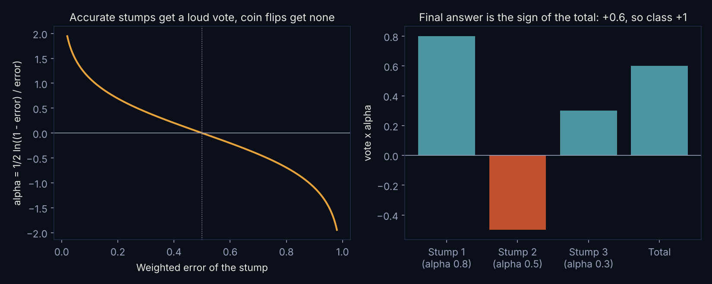
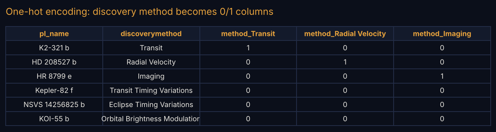
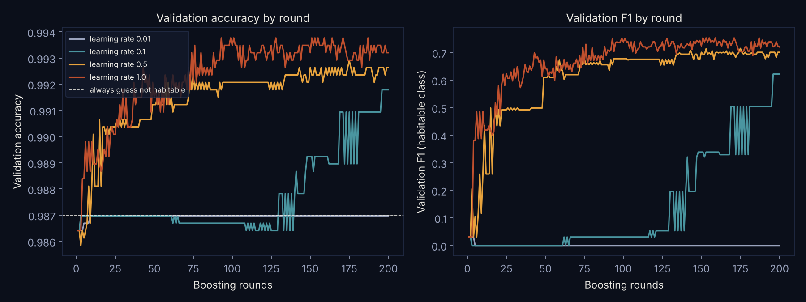
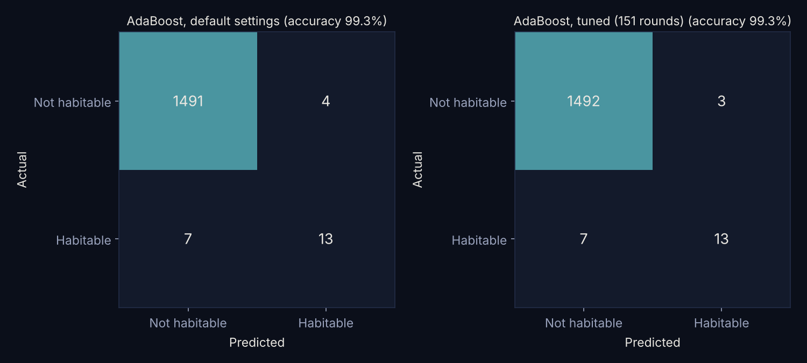
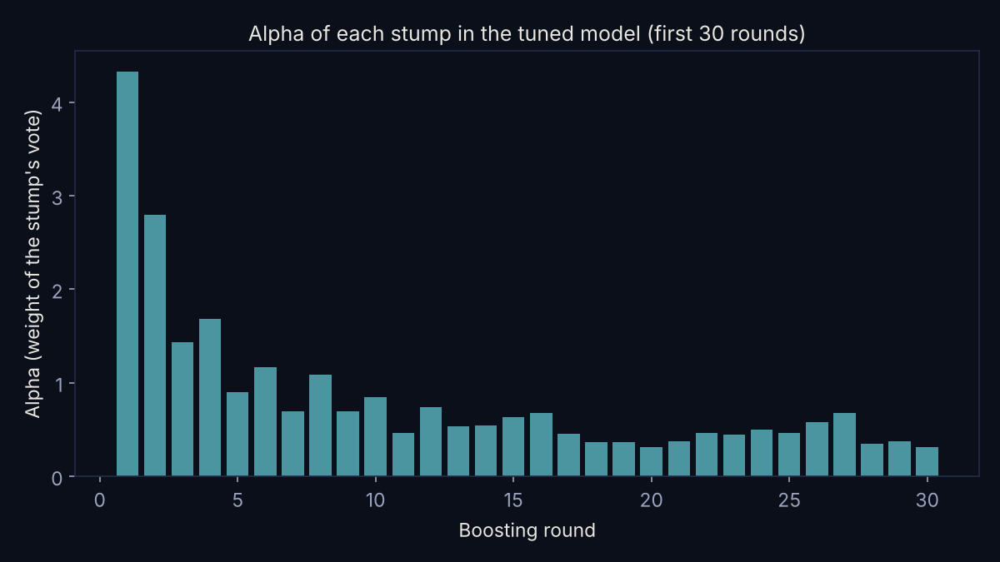
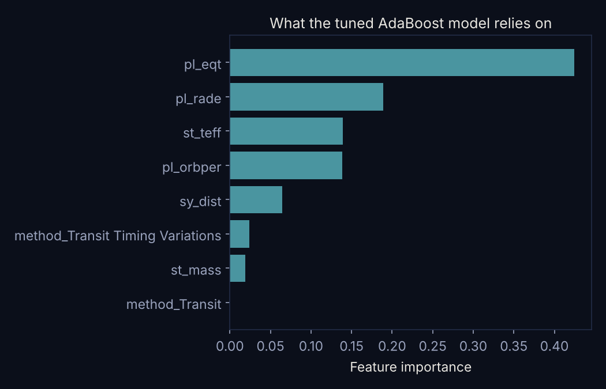
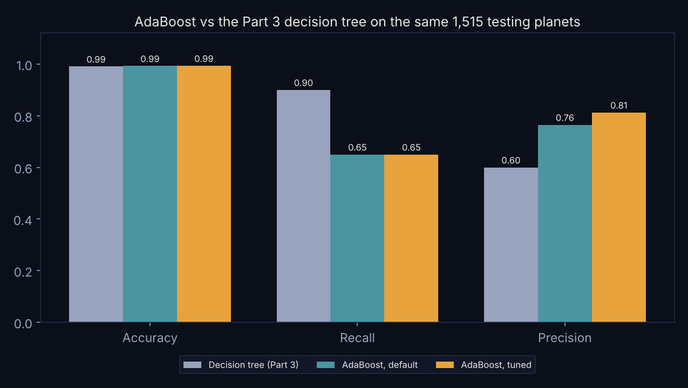

AdaBoost
AdaBoost
Overview
Boosting builds one strong classifier out of many weak ones that are trained one after another, each aimed at the mistakes of the models before it. That is the key difference from bagging, as in a random forest, where many trees are grown independently on random resamples of the data and then averaged. Bagging mainly reduces how much a single tree's answer jumps around, while boosting mainly reduces the systematic errors of a simple model by keeping attention on the cases it keeps getting wrong.

AdaBoost, short for adaptive boosting, usually uses decision stumps as its weak learners: trees with a single split, a barely better-than-guessing rule such as one question about one measurement. Every row of training data starts with the same weight, 1/n. In each round a stump is fitted to the weighted rows, so a row with a larger weight counts for more. The stump's weighted error is the total weight of the rows it gets wrong, and its vote weight is alpha = 1/2 ln((1 - error) / error). Alpha is large when the error is small, zero when the stump is no better than a coin flip, and negative if it is worse. The rows are then reweighted: wrongly classified rows are multiplied by ealpha and correctly classified rows by e-alpha, and the weights are rescaled to sum to 1, so the next stump is pushed toward the rows that have been hardest. After all rounds, each stump votes for a class, its vote is multiplied by its alpha, and the class with the larger total wins. The scikit-learn version of the formula drops the factor of one half, which doubles every alpha but changes neither the relative reweighting nor the winner of the vote.


Data Prep
AdaBoost uses the same labeled data and split as the earlier supervised models: 5,047 planets, split at random into a training set of 3,532 (46 habitable) and a testing set of 1,515 (20 habitable), with no planet in both, so the testing set measures performance on planets the model never saw. The eight measurements are already numeric, but scikit-learn's AdaBoost needs numbers only, so a categorical column was added and encoded: how the planet was discovered. One-hot encoding turns each of the 8 discovery methods found in the training set into its own 0/1 column, which gives 8 measurements plus 8 method columns. The columns were built from the training set and the testing set was lined up to the same columns, so a method that appears only in the testing set is ignored. Rounds and learning rate were tuned with five-fold cross-validation inside the training set, which keeps the testing set untouched until the end.



Data files: labeled_sample.csv, train_set.csv, and test_set.csv, with the discovery method taken from exoplanets_clean.csv.
Code
Data split: prep_train_test.py. AdaBoost: adaboost.py. Both are written in Python and use pandas, scikit-learn, and matplotlib.
Results
Validation accuracy was tracked as boosting rounds were added, for four learning rates. A learning rate of 0.01 never rose above the 98.7% of always guessing not habitable in 200 rounds, and 0.1 only began to improve after about 130 rounds. Rates of 0.5 and 1.0 climbed within the first 25 to 50 rounds, and the rate of 1.0 leveled off near 99.3% to 99.4% after about 90 rounds, though the curve is noisy. Because accuracy has a floor of 98.7%, the settings were chosen by F1 on the habitable class instead, which does react to finding the rare planets. The best setting was a learning rate of 1.0 with 151 rounds, at a validation F1 of 0.75 and a validation accuracy of 99.4%. That setting sits at the top edge of the learning rates tried and the curve is noisy, so nearby settings would likely do about as well.

On the 1,515 testing planets, AdaBoost with default settings (50 rounds, learning rate 1.0) reached 99.3% accuracy, found 13 of the 20 habitable planets, and raised 4 false alarms. The tuned model (151 rounds) reached 99.3%, found the same 13, and raised 3 false alarms, so 81% of its flags were correct. Adding the one-hot discovery-method columns made no difference to the test result, and the tuned model leans mostly on equilibrium temperature (about 43% of the importance), then planet radius (19%), host star temperature (14%), and orbital period (14%). The alpha values show the mechanism at work: the first stump has an error of 0.013, equal to the share of habitable planets in the training set, so it essentially votes not habitable for every planet and earns a very large alpha of 4.3. Later stumps, forced by the growing weights to focus on the rare habitable planets, have larger errors (0.058, then 0.19) and smaller alphas (2.8, then 1.4).



Against the Part 3 decision tree (Tree 1, Gini, depth 3), AdaBoost is better on accuracy and precision but worse on recall. The tree scored 99.1%, found 18 of 20 habitable planets, and raised 12 false alarms (60% of flags correct), against 99.3%, 13 of 20, and 3 false alarms (81%) for tuned AdaBoost. AdaBoost made 10 mistakes in total against 14 for the tree, an accuracy gain of 0.26 percentage points, but the tree missed 2 habitable planets where AdaBoost missed 7. The two end up essentially tied on F1, at about 0.72 each, so which did best depends on what matters: AdaBoost for a short, precise list, and the tree for missing fewer. With only 20 habitable planets in the testing set, neither difference should be over-read.

Conclusions
Boosting many simple stumps beat a single tree slightly on overall accuracy, but not on the thing that matters most for finding habitable planets, which is missing as few as possible. The models built so far form a spectrum: balanced logistic regression flagged 98 planets and caught all 20 habitable ones, the decision tree flagged 30 and caught 18, and AdaBoost flagged 16 and caught 13. Which is best depends on the cost of looking at a wrong planet against the cost of overlooking a right one, which for scarce telescope time is a real trade-off. Every model leans on the same few measurements, equilibrium temperature first and planet size second, so the profile of a candidate is stable even when the shortlists differ. Cautions carry over: only 20 habitable planets are in the testing set, many masses and radii are estimates tied together by a formula, and the label is built from quantities closely related to these same measurements.